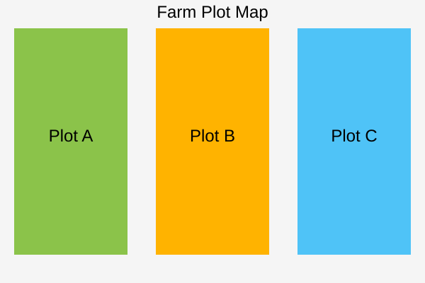

Farm Map

Plot A Details
Plot ID: A-101
Farmer Name: Ramesh Patil
Crop: Sugarcane
Soil Moisture: 42%
Recommendation: Irrigate for 2 hours 30 minutes.
Plot B Details
Plot ID: B-205
Farmer Name: Suresh Kumar
Crop: Sugarcane
Soil Moisture: 58%
Recommendation: Irrigation can be delayed due to expected rainfall.
Plot C Details
Plot ID: C-310
Farmer Name: Mahesh Shinde
Crop: Sugarcane
Soil Moisture: 28%
Recommendation: Soil moisture is low. Irrigation recommended.